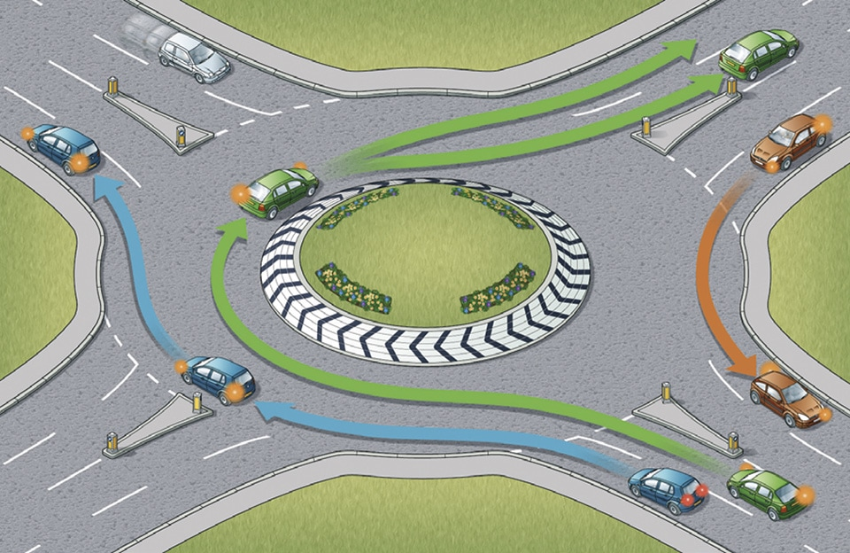

Study
Three ways off the roundabout
The diagram is the uploaded picture, left as it is. Only the three cars and the route glow move.

Ten-second loop. They wait on the south approach, move off together, then each follows its own line: blue off to the west, green off to the north, orange off to the east. The lines fade in the last second. Cars stay the same size and face the way they are travelling.